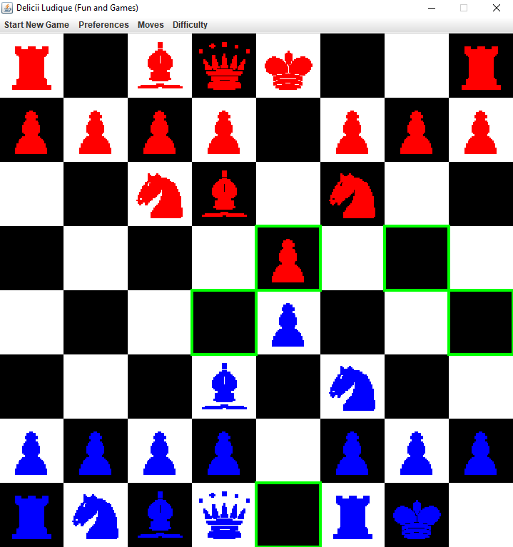

Chess AI, with Alpha Beta Pruning

Implemented an AI, which, using mini-max with Alpha-Beta pruning, can play a number of different games of perfect information (a formal designation which includes any game without hidden, or random aspects), including, most-notably, chess. Learned fundamentals of game-theory, and gained an appreciation for the intricacies of the human brain. While a human can instantly look at a game and develop a set of heuristics (certain rules of thumb which dictate long term strategy), my AI has to analyze a huge set of possibilities, before coming up with a move. Despite giving it a number of positional and material heuristics which allowed it to play relatively conventionally more nuanced techniques are required for more refined play.